HTML nima?
- HTML (HyperText Markup Language)
- HTML asoschisi fizik Tim Berners-Li , bo’lib 1989 yilda internetga asoslangan gipermatn tizimini yozgan.
- HTML veb-sahifalarni yaratish uchun standart belgilash tilidir
- HTML Web-sahifaning tuzilishini tavsiflaydi
- HTML bir qator elementlardan iborat
- HTML elementlari brauzerga kontentni qanday ko'rsatishni aytadi
- HTML elementlari "bu sarlavha", "bu paragraf", "bu havola" va boshqalar kabi kontent qismlarini belgilaydi.
HTML Sematics
Sematika bu html o’zi belgilab bergan qonun qoida va taglarni ketmaketligi tag structure.
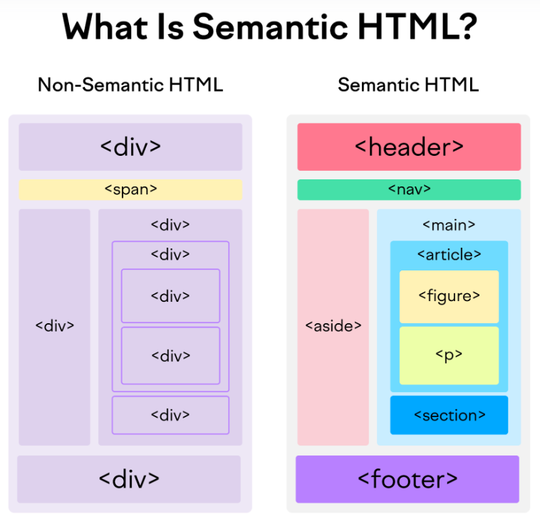DOCTYPE
Sematika bu html o’zi belgilab bergan qonun qoida va taglarni ketmaketligi tag structure.
- Buni qo’yish required hisoblanadi codeni birinchi qatoriga qo’yiladi.
- Standartlar rejimi: Doctype brauzerga sahifani standartlarga mos ravishda ko'rsatishni buyuradi. Agar Doctype noto'g'ri yoki kiritilmagan bo'lsa, ba'zi brauzerlar "quirks mode" deb ataladigan xatti-harakatlarga o'tadi, bu eski veb-sahifalarni ko'rsatish usuli.
- Qaror qabul qilish jarayonini soddalashtirish: Zamonaviy HTML5 doctype yozuvi juda sodda bo'lib, yangi hujjatlarni yaratishda xatolar qilish imkoniyatini kamaytiradi.
- Quirks Mode — bu brauzerlarning eski, standartlarga mos kelmaydigan veb-sahifalarni to'g'ri ko'rsatish uchun ishlatadigan maxsus rejimi. Bu rejimda brauzerlar veb-sahifalarni hozirgi zamonaviy HTML va CSS standartlariga mos ravishda emas, balki 1990-yillarning oxiri va 2000-yillarning boshlaridagi eski, noto'g'ri yoki noto'liq kodlarni qo'llab-quvvatlash uchun ishlaydi.
Tags
1. HTML taglardan iborat taglar esa 2 ga bo’linadi juft va toq.
2. Misol uchun toq tegalr br, hr…, shular bo’lsa juft taglar title, header, nav… shulardan iborat
3. <menu> = <ul>
4. <html lang="en">
lang="en" atributi sahifadagi matnning tilini belgilaydi. Bu yerda en qiymati ingliz tilini anglatadi. Bu atribut SEO (qidiruv tizimlari optimizatsiyasi) va yordamchi texnologiyalar (masalan, ekran o‘qish dasturlari) uchun foydali.
5. <meta name="viewport" content="width=device-width, initial-scale=1.0" />
Bu meta tegi mobil qurilmalarda sahifaning to‘g‘ri ko‘rinishini ta'minlash uchun ishlatiladi. content="width=device-width, initial-scale=1.0" qiymati sahifaning kengligini qurilma ekranining kengligiga moslashishini va dastlabki kattalashtirish darajasini belgilaydi. Bu responsiv dizaynni qo‘llab-quvvatlaydi.
6. <head>
meta ma’lumotlarini o’z ichiga oladi. head qismidagi ma'lumotlar foydalanuvchiga ko‘rinmaydi, lekin brauzer va qidiruv tizimlari tomonidan ishlatiladi.
7. <meta charset="UTF-8" >
meta tegining charset="UTF-8" atributi HTML hujjatining belgilar to‘plamini belgilaydi. UTF-8 belgilar to‘plami turli tillarda va yozuv tizimlarida keng qo‘llaniladi. Bu hujjatning to‘g‘ri kodlash va ko‘rsatishni ta'minlaydi.
8. <abbr >
bu tag TATU, TDTU shunday qisqartmalar uchun ishlatiladi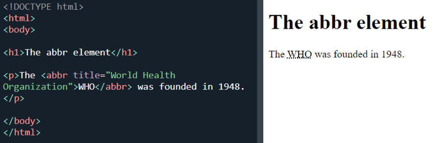
9. <map>, <area>
bu orqali biz imgni coords orqali belgilab olamiz va shuni click qilgan paytda qandaydir amal bajarishimiz mumkin bo’ladi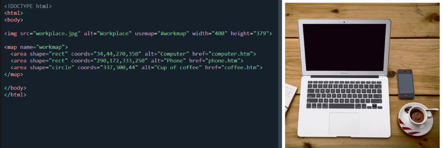
10. <blockquote>, <q>
Teg blockquote boshqa manbadan olingan bo'limni belgilaydi.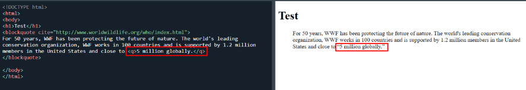
11. <code>, <samp>, <kbd>
Bu teglar kompyuter kodining bir qismini aniqlash uchun ishlatiladi. Ichkaridagi tarkib brauzerning standart monospace shriftida ko'rsatiladi.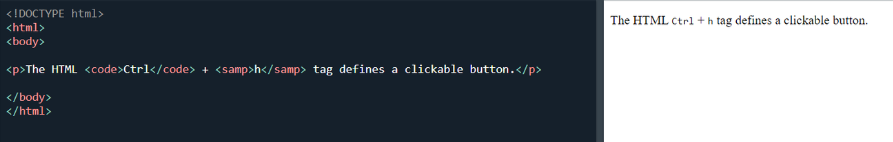
12. <em>, <i>, <cite>, <dfn>
- Teg em urg'u berilgan matnni aniqlash uchun ishlatiladi
- Teg i ko'pincha texnik atama, boshqa tildagi ibora, fikr, kema nomi va boshqalarni ko'rsatish uchun ishlatiladi.
- Teg cite ijodiy ishning nomini belgilaydi (masalan, kitob, she'r, qo'shiq, kino, rasm, haykal va boshqalar).
- Teg dfn "ta'rif elementi" degan ma'noni anglatadi va u tarkibda aniqlanishi kerak bo'lgan atamani belgilaydi.
13. <bdo>
Teg bdo joriy matn yo'nalishini bekor qilish uchun ishlatiladi. Shuning uchun ichidagi matn boshqa yo'nalishda ko'rsatiladi. dir ltr rtl matn yo’nalishini aniqlaydi
14. <dl>, <dt>, <dd>
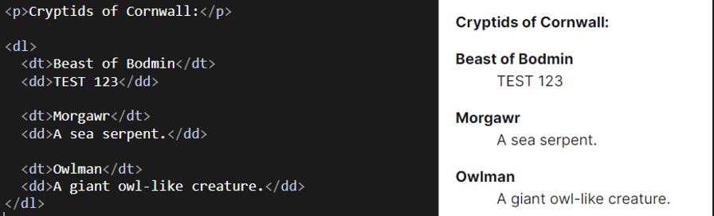
- Teg ddtavsiflar ro'yxatidagi atama/ismni tasvirlash uchun ishlatiladi.
- Teg dl (ta'riflar ro'yxatini belgilaydi) va dt (atamalarni/ismlarni belgilaydi) dd bilan birgalikda ishlatiladi.
- Teg ichiga dd paragraflar, qatorlar, rasmlar, havolalar, ro'yxatlar va boshqalarni qo'yishingiz mumkin.
15. <details>
Teg details ko'pincha foydalanuvchi ochishi va yopishi mumkin bo'lgan interaktiv vidjet yaratish uchun ishlatiladi. Odatiy bo'lib, vidjet yopiq. Ochiq bo'lsa, u kengayadi va ichidagi tarkibni ko'rsatadi. Tafsilotlar uchun ko'rinadigan sarlavhani belgilash uchun summary tegi bilan birgalikda ishlatiladi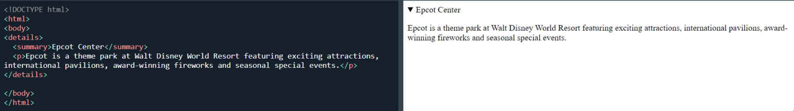
16. <meter>, <progress>
foizlar bilan ishlashda qo’l keladi. Yangi frontendchililar resumesida js, html, css larni qancha bilishini shu orqali belgilashadi. 😄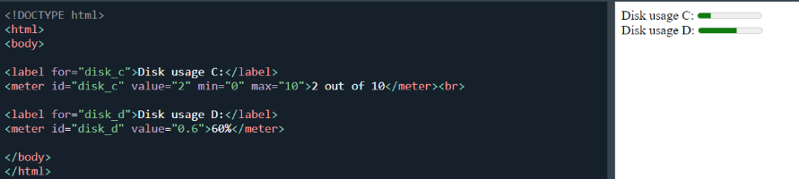
17. <optgroup>
Teg select elementida (ochiladigan ro'yxat) optgroup tegishli variantlarni guruhlash uchun ishlatiladi.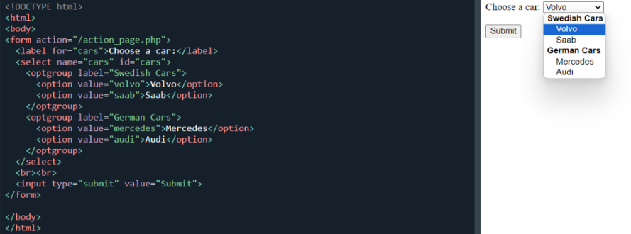
18. <picture>
bu orqali biz ekranni size orqali yani css mediaquery bilan oxash necha px dan keyn qaysi rasm ko’rinishini belgilash mumkin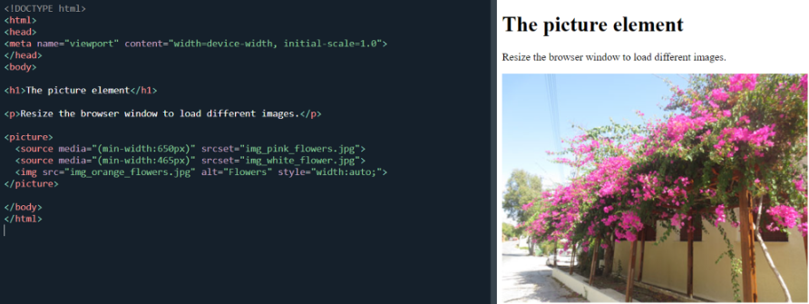
19. <wbr>
(Word Break Opportunity) tegi wbr matnning qaysi joyiga satr uzilishini qoʻshish mumkinligini koʻrsatadi.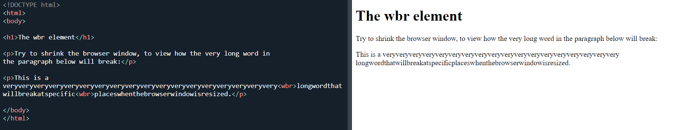
20. <canvas>
Bu teg orqali har hil diagramma chart hatto o’yinlar ham yaratish mumkin. Buni o’zini alohida soha sifatida qaralsa ham bo’ladi. Misol uchun: Bruno simon
20. ARIA attribute
ARIA (Accessible Rich Internet Applications) atributlari veb-saytlarning foydalanuvchanligini yaxshilash uchun ishlatiladigan maxsus HTML atributlardir. Bu atributlar yordamida veb-elementlar ekranni o'qiydigan dasturlar va boshqa yordamchi texnologiyalar tomonidan tushunarli bo'ladi. ARIA atributlari asosan ko'rish qobiliyati cheklangan foydalanuvchilar uchun interaktiv veb-kontentni tushunarli qilish uchun mo'ljallangan.
- Role (Rol) Atributi**: Elementning turini yoki vazifasini bildiradi.
- Misol: role="button" bu elementni tugma deb belgilaydi.- State (Holat) Atributlari**: Elementning hozirgi holatini bildiradi.
- Misol: aria-checked="true" bu elementning tanlanganligini bildiradi.- Property (Xususiyat) Atributlari**: Elementning doimiy yoki o'zgaruvchan xususiyatlarini belgilaydi.
- Misol: aria-label="Menu" bu elementning menyu ekanligini bildiradi.- Live Region (Jonli Hudud) Atributlari**: Elementda ma'lumotlar dinamik tarzda yangilangan paytda foydalanuvchiga bildirish uchun ishlatiladi.
- Misol: aria-live="polite" bu elementdagi o'zgarishlar ekranni o'qiydigan dastur tomonidan bildiriladi.- Relationship (Aloqa) Atributlari**: Elementlarning bir-biri bilan qanday bog'liqligini bildiradi.
- Misol: aria-labelledby="label-id" bu element qaysi yorliq bilan bog'liqligini ko'rsatadi.- Widget Atributlari**: Interaktiv komponentlar uchun mo'ljallangan.
- Misol: aria-expanded="false" bu element hozircha kengaytirilmaganligini bildiradi.